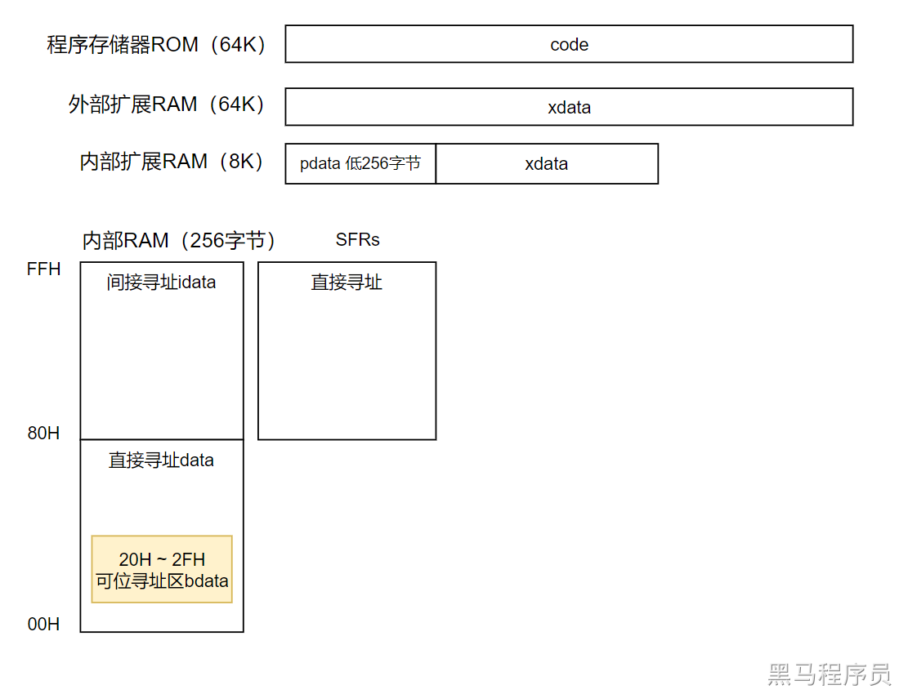
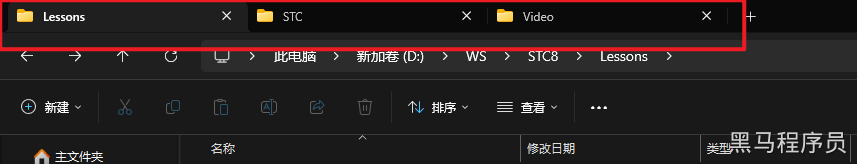
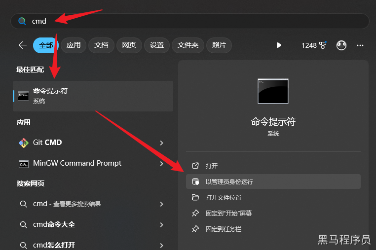
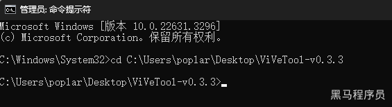

<!DOCTYPE lake>
<h2 data-lake-id="jNnsP" id="jNnsP"><code data-lake-id="u8505458a" id="u8505458a"><span data-lake-id="ufd0fbe67" id="ufd0fbe67">volatile</span></code><span data-lake-id="ub8a71ce0" id="ub8a71ce0">关键字</span></h2><p data-lake-id="u57690d94" id="u57690d94"><br/></p><p data-lake-id="ube9ff929" id="ube9ff929"><span data-lake-id="u599431d1" id="u599431d1">在单片机开发中，</span><code data-lake-id="u57d0d261" id="u57d0d261"><span data-lake-id="u3222c633" id="u3222c633">volatile</span></code><span data-lake-id="u9af0b366" id="u9af0b366">是一个关键字，用于告诉编译器该变量的值可能在程序的执行过程中</span><strong><span data-lake-id="ua9f506d2" id="ua9f506d2">被意外地改变</span></strong><span data-lake-id="u945a483f" id="u945a483f">，因此编译器</span><strong><span data-lake-id="u1200b35c" id="u1200b35c">不应进行优化</span></strong><span data-lake-id="u05705787" id="u05705787">操作，以确保程序的正确性。</span></p><p data-lake-id="u85d8febf" id="u85d8febf"><br/></p><p data-lake-id="uae1e5fad" id="uae1e5fad"><span data-lake-id="u4ca88475" id="u4ca88475">当一个变量被声明为</span><code data-lake-id="u11879305" id="u11879305"><span data-lake-id="uad8fae24" id="uad8fae24">volatile</span></code><span data-lake-id="ueb18a037" id="ueb18a037">时，编译器会在每次使用该变量时都重新读取它的值，而不是使用之前缓存的值。这是因为该变量的值可能会由于硬件中断、外部设备或其他并行代码的操作而发生变化，而这些变化编译器无法预测到。</span></p><p data-lake-id="u610ef71f" id="u610ef71f"><span data-lake-id="u0588bb50" id="u0588bb50">​</span><br/></p><p data-lake-id="u71fec0e0" id="u71fec0e0"><span data-lake-id="u7e933539" id="u7e933539">查看STC8H.H文件，可以看到一个典型的寄存器宏定义如下：</span></p><span class="yuque-card-unsupported">[codeblock]</span><p data-lake-id="ud0974bd4" id="ud0974bd4"><span data-lake-id="ue6b0d231" id="ue6b0d231">这里就用到了</span><code data-lake-id="u2fef6ec9" id="u2fef6ec9"><span data-lake-id="u5280f088" id="u5280f088">volatile</span></code><span data-lake-id="u8e02fea0" id="u8e02fea0">关键字。</span></p><p data-lake-id="u4ad4976f" id="u4ad4976f"><br/></p><p data-lake-id="u42488577" id="u42488577"><code data-lake-id="u66716765" id="u66716765"><span data-lake-id="ue9cae3af" id="ue9cae3af">volatile</span></code><span data-lake-id="u211962e9" id="u211962e9">关键字的作用主要有两个方面：</span></p><p data-lake-id="uc20b2a4f" id="uc20b2a4f"><br/></p><ol list="u8438d5b1"><li data-lake-id="u07eec0b7" fid="u8697ca49" id="u07eec0b7"><span data-lake-id="u1c243d8a" id="u1c243d8a"> 防止编译器优化：编译器在进行优化时，可能会假设一个变量的值在其它代码段没有被修改的情况下保持不变。然而，在并行操作、中断处理等情况下，这种假设是不正确的。通过使用volatile关键字，可以告诉编译器不要进行这种优化，确保每次使用变量时都从内存中读取最新的值。 </span></li><li data-lake-id="u045486b9" fid="u8697ca49" id="u045486b9"><span data-lake-id="u09e2acb1" id="u09e2acb1"> 与外部设备的交互：在单片机开发中，我们经常需要与外部设备进行交互，例如使用寄存器与外设进行通信。由于外设的状态可能会在任何时候发生变化，我们需要使用</span><code data-lake-id="ubba515bb" id="ubba515bb"><span data-lake-id="u637ac92a" id="u637ac92a">volatile</span></code><span data-lake-id="u8a9aa2dd" id="u8a9aa2dd">关键字来声明与外设交互的寄存器，以确保读取和写入操作的正确性。 </span></li></ol><p data-lake-id="ue776a9b9" id="ue776a9b9"><br/></p><p data-lake-id="ua7c344ee" id="ua7c344ee"><span data-lake-id="ud7eaa4a9" id="ud7eaa4a9">下面是一个示例，展示了如何在C语言中使用volatile关键字：</span></p><p data-lake-id="uaa9c7571" id="uaa9c7571"><br/></p><span class="yuque-card-unsupported">[codeblock]</span><p data-lake-id="u7c1b82c6" id="u7c1b82c6"><br/></p><p data-lake-id="u5ac88f93" id="u5ac88f93"><span data-lake-id="ub73d7bb1" id="ub73d7bb1">在上面的示例中，变量</span><code data-lake-id="u90f8f21c" id="u90f8f21c"><span data-lake-id="u6fef5a2c" id="u6fef5a2c">flag</span></code><span data-lake-id="u6d2028d7" id="u6d2028d7">被声明为</span><code data-lake-id="u54b5c7a2" id="u54b5c7a2"><span data-lake-id="u253d78bf" id="u253d78bf">volatile int</span></code><span data-lake-id="u9355501c" id="u9355501c">，因此在每次使用它时，编译器将重新读取其值，而不是使用之前的缓存值。这确保了在其他代码或中断中修改</span><code data-lake-id="ue28ccf1b" id="ue28ccf1b"><span data-lake-id="u0966d97a" id="u0966d97a">flag</span></code><span data-lake-id="uda448cfe" id="uda448cfe">的值后，主循环能够及时检测到变化并执行相应操作。</span></p><p data-lake-id="u579adea2" id="u579adea2"><span data-lake-id="ufcb9259d" id="ufcb9259d">​</span><br/></p><h2 data-lake-id="ILXrw" id="ILXrw"><code data-lake-id="u9aabff31" id="u9aabff31"><span data-lake-id="u47c99935" id="u47c99935">sfr</span></code><span data-lake-id="ua8fa100c" id="ua8fa100c">和</span><code data-lake-id="uf2e51ff6" id="uf2e51ff6"><span data-lake-id="u2f1306e5" id="u2f1306e5">sbit</span></code><span data-lake-id="u7d010e56" id="u7d010e56">关键字</span></h2><p data-lake-id="u74655869" id="u74655869"><span data-lake-id="ube6dbd46" id="ube6dbd46">在单片机开发中，</span><code data-lake-id="u2b56d683" id="u2b56d683"><span data-lake-id="u24ddaa0f" id="u24ddaa0f">sfr</span></code><span data-lake-id="ucb6f4269" id="ucb6f4269">、</span><code data-lake-id="ue5a6711b" id="ue5a6711b"><span data-lake-id="u215de1a2" id="u215de1a2">sbit</span></code><span data-lake-id="u5434968d" id="u5434968d">和是特定于某些编译器或单片机体系结构的关键字，用于定义和访问特殊功能寄存器（Special Function Registers，SFR）、位（Bit），它们作用如下：</span></p><p data-lake-id="u6cfb1754" id="u6cfb1754"><br/></p><ol list="u5f56972b"><li data-lake-id="u629f3978" fid="u831b18eb" id="u629f3978"><span data-lake-id="u58400f30" id="u58400f30"> </span><code data-lake-id="u447b7923" id="u447b7923"><span data-lake-id="udd62d0b9" id="udd62d0b9">sfr（Special Function Register）</span></code><span data-lake-id="u3f4f22fa" id="u3f4f22fa">：sfr用于定义和访问</span><strong><span data-lake-id="u17146b3d" id="u17146b3d">特殊功能寄存器</span></strong><span data-lake-id="u6c1165b4" id="u6c1165b4">。特殊功能寄存器是单片机中的一些特殊寄存器，用于控制和配置硬件功能，如控制器、定时器、串口等。sfr关键字允许程序员为这些特殊功能寄存器分配易于使用的名称，并提供对这些寄存器的访问和操作。<br><br/></br></span></li></ol><p data-lake-id="u8ea66d70" id="u8ea66d70"><span data-lake-id="u6033b1fb" id="u6033b1fb">以下是一个使用sfr定义和访问特殊功能寄存器的示例（基于Keil C51编译器）： </span></p><span class="yuque-card-unsupported">[codeblock]</span><p data-lake-id="u8844aa88" id="u8844aa88"><span data-lake-id="u97b19158" id="u97b19158"><br/></span><span data-lake-id="uf57ed3a8" id="uf57ed3a8">在上面的示例中，通过使用sfr关键字，我们为特殊功能寄存器P1和TCON分配了易于理解的名称，并能够对它们进行读写操作。 </span></p><p data-lake-id="u5a600d2a" id="u5a600d2a"><span data-lake-id="ud9b3be17" id="ud9b3be17">​</span><br/></p><ol list="ub1a50a20" start="2"><li data-lake-id="uaefc6a7d" fid="u72d4707e" id="uaefc6a7d"><span data-lake-id="ue860fa5a" id="ue860fa5a"> </span><code data-lake-id="u66bc46bd" id="u66bc46bd"><span data-lake-id="u6ad6d440" id="u6ad6d440">sbit（Special Bit）</span></code><span data-lake-id="u45a8c9d3" id="u45a8c9d3">：sbit用于定义和访问</span><strong><span data-lake-id="u01b5317b" id="u01b5317b">特殊功能寄存器中的位</span></strong><span data-lake-id="u65090105" id="u65090105">（bit）。单片机中的特殊功能寄存器通常包含多个位，每个位都用于控制或表示特定的功能或状态。sbit关键字允许程序员为这些位分配易于使用的名称，并提供对它们的访问和操作。</span></li></ol><p data-lake-id="ud335af14" id="ud335af14"><span data-lake-id="ufea9cbf3" id="ufea9cbf3">以下是一个使用sbit定义和访问特殊功能寄存器位的示例： </span></p><span class="yuque-card-unsupported">[codeblock]</span><p data-lake-id="u8dbda23b" id="u8dbda23b"><span data-lake-id="uc4cfd773" id="uc4cfd773"><br/></span><span data-lake-id="uf14a71f2" id="uf14a71f2">在上面的示例中，我们使用sbit关键字将P1寄存器中的第0位定义为LED，并可以对LED进行读写操作。 </span></p><p data-lake-id="u217a1876" id="u217a1876"><span data-lake-id="ucbf69c87" id="ucbf69c87">​</span><br/></p><h2 data-lake-id="XicAH" id="XicAH"><span data-lake-id="u9965826b" id="u9965826b">xdata, idata, code等存储类型</span></h2><p data-lake-id="u2d1b62f0" id="u2d1b62f0"><span data-lake-id="uc0f94c3a" id="uc0f94c3a">51单片机采用哈佛微控制器架构，keil的C51中定义了xdata、idata、xdata、code几种域修饰符。内存空间编址有重叠。这些修饰符决定了变量访问方式。使用这些关键字可以帮助程序员更好地管理内存空间，从而提高程序的效率。举个例子，假设我们正在编写一个实时控制系统，在这个系统中需要频繁读写一些变量，如传感器数据、控制指令等。我们可以使用xdata或code来存储这些变量，以便快速读写和响应。</span></p><p data-lake-id="ue5e35469" id="ue5e35469"><span data-lake-id="u26dbe800" id="u26dbe800">​</span><br/></p><p data-lake-id="ud51aa1a5" id="ud51aa1a5"></p><p data-lake-id="u35d308f8" id="u35d308f8"><span data-lake-id="u3f89b25e" id="u3f89b25e">STC8H 系列单片机</span><strong><span data-lake-id="u8ac8791d" id="u8ac8791d">内部的数据存储器</span></strong><span data-lake-id="u366741ed" id="u366741ed">在物理和逻辑上都分为两个地址空间</span></p><ul list="u3ac314bd"><li data-lake-id="u9a9ffd8c" fid="uae07e784" id="u9a9ffd8c"><span data-lake-id="u61dd0e6d" id="u61dd0e6d">内部 RAM(256 字节)</span></li><li data-lake-id="u0586e2ff" fid="uae07e784" id="u0586e2ff"><span data-lake-id="u11ec22d8" id="u11ec22d8">内部扩展 RAM</span></li></ul><p data-lake-id="ua64ec779" id="ua64ec779"><span data-lake-id="u9123e04b" id="u9123e04b">其中内部 RAM 的高 128 字节的数据存储器与特殊功能寄存器(SFRs)地址重叠，实际使用时通过不同的寻址方式加以区分。</span></p><h3 data-lake-id="ib0vX" id="ib0vX"><span data-lake-id="u44d8533e" id="u44d8533e">内部 RAM (256 字节)</span></h3><p data-lake-id="ubee70451" id="ubee70451"><span data-lake-id="ufad2c2d1" id="ufad2c2d1">内部 RAM 共 256 字节，可分为 2 个部分：低 128 字节 RAM 和高 128 字节 RAM。</span></p><ul list="u2b544edb"><li data-lake-id="u5d0536be" fid="u9de35396" id="u5d0536be"><span data-lake-id="uf68e8f3d" id="uf68e8f3d">低 128 字节 RAM（data）的数据存储器与传统 8051 兼容，既可直接寻址也可间接寻址。</span></li><li data-lake-id="u55c545b4" fid="u9de35396" id="u55c545b4"><span data-lake-id="u0a69b889" id="u0a69b889">高 128 字节 RAM（idata）在 8052 中扩展了高 128 字节 RAM</span></li></ul><h3 data-lake-id="KzUjl" id="KzUjl"><span data-lake-id="u274a4bb7" id="u274a4bb7">特殊功能寄存器区SFRs</span></h3><p data-lake-id="u96983688" id="u96983688"><span data-lake-id="u5b1728d5" id="u5b1728d5">idata与特殊功能寄存器区SFRs共用相同的逻辑地址，都使用 80H~FFH，但在物理上是分别独立的，使用时通过不同的寻址方式加以区分。高 128 字节 RAM 只可间接寻址，特殊功能寄存器区只可直接寻址。</span></p><h3 data-lake-id="oTfdM" id="oTfdM"><span data-lake-id="uc9048511" id="uc9048511" style="color: rgb(0,0,0)">内部扩展 RAM (8K)</span></h3><p data-lake-id="u3d242039" id="u3d242039"><span data-lake-id="udebabf5a" id="udebabf5a">在 C 语言中，可使用 xdata 声明存储类型为内部扩展RAM。例如：</span><code data-lake-id="ua45eb6aa" id="ua45eb6aa"><span class="lake-fontsize-12" data-lake-id="ua6f93f1a" id="ua6f93f1a" style="color: rgb(0,0,0)">unsigned char xdata i;</span></code></p><p data-lake-id="u5602e299" id="u5602e299"><span data-lake-id="u13d6a6d1" id="u13d6a6d1">pdata 即为 xdata 的低 256 字节。</span></p><h3 data-lake-id="gqB3z" id="gqB3z"><span data-lake-id="u54e61f93" id="u54e61f93">外部扩展RAM (64K)</span></h3><p data-lake-id="ua3c9be4e" id="ua3c9be4e"><span data-lake-id="uae6ecce2" id="uae6ecce2">STC8H 系列封装管脚数为 40 及其以上的单片机具有扩展 64KB 外部数据存储器的能力。</span></p><p data-lake-id="u178f179f" id="u178f179f"><br/></p><p data-lake-id="ue0080a72" id="ue0080a72"><span data-lake-id="ubfcb0b30" id="ubfcb0b30">需要注意的是，具体的存储位置、读写速度和存储空间可能因不同的芯片型号、厂商和配置而有所不同。</span></p><p data-lake-id="ub96243ac" id="ub96243ac"><br/></p><p data-lake-id="u2e5b7cc0" id="u2e5b7cc0"><span data-lake-id="u4f677c8e" id="u4f677c8e">下面这个表格汇总了STC8H8K64U各存储类型的特点和用法，并提供了示例代码。</span></p><table class="lake-table" data-lake-id="SXr9Q" fit-width="true" id="SXr9Q" margin="true" style="width: 1283px" width-mode="contain"><colgroup><col width="221"/><col width="143"/><col width="110"/><col width="150"/><col width="659"/></colgroup><tbody><tr data-lake-id="uea160d08" id="uea160d08"><td data-lake-id="u3220dc16" id="u3220dc16"><p data-lake-id="u2fa70bbc" id="u2fa70bbc" style="text-align: center"><strong><span data-lake-id="u9ad416aa" id="u9ad416aa">存储区域</span></strong></p></td><td data-lake-id="u400f6dae" id="u400f6dae"><p data-lake-id="u0536373d" id="u0536373d" style="text-align: center"><strong><span data-lake-id="ua7f72468" id="ua7f72468">地址范围</span></strong></p></td><td data-lake-id="u820e66fa" id="u820e66fa"><p data-lake-id="uee197528" id="uee197528" style="text-align: center"><strong><span data-lake-id="ub54d60a4" id="ub54d60a4">大小</span></strong></p></td><td data-lake-id="u7508b1b4" id="u7508b1b4"><p data-lake-id="uda217523" id="uda217523" style="text-align: center"><strong><span data-lake-id="ub8704fdb" id="ub8704fdb">关键字/访问方式</span></strong></p></td><td data-lake-id="u4280fd41" id="u4280fd41"><p data-lake-id="ud2640dfe" id="ud2640dfe" style="text-align: center"><strong><span data-lake-id="u4a853245" id="u4a853245">示例代码与简要说明</span></strong></p></td></tr><tr data-lake-id="u79a1feb9" id="u79a1feb9"><td data-lake-id="u78aaa298" id="u78aaa298"><p data-lake-id="u631a3322" id="u631a3322" style="text-align: left"><strong><span data-lake-id="u447bc5f7" id="u447bc5f7">内部RAM低128字节</span></strong></p></td><td data-lake-id="u44ecbbf5" id="u44ecbbf5"><p data-lake-id="u64a4ab7d" id="u64a4ab7d" style="text-align: left"><span data-lake-id="u22bdb99e" id="u22bdb99e">00H ~ 7FH</span></p></td><td data-lake-id="uda032df5" id="uda032df5"><p data-lake-id="u3e6db18f" id="u3e6db18f" style="text-align: left"><span data-lake-id="ud28bede5" id="ud28bede5">128字节</span></p></td><td data-lake-id="ue2a63e02" id="ue2a63e02"><p data-lake-id="u1b19e7cf" id="u1b19e7cf" style="text-align: left"><code data-lake-id="u8d20827b" id="u8d20827b"><span data-lake-id="u534084ef" id="u534084ef">data</span></code></p></td><td data-lake-id="u19838889" id="u19838889"><p data-lake-id="u6e340beb" id="u6e340beb" style="text-align: left"><code data-lake-id="ub3ec2d2d" id="ub3ec2d2d"><span data-lake-id="ua5bf9125" id="ua5bf9125">unsigned char data fast_var = 0x55;</span></code><span data-lake-id="u88a64250" id="u88a64250"><br/></span><em><strong><span data-lake-id="uff297184" id="uff297184">说明</span></strong></em><span data-lake-id="u60ba1675" id="u60ba1675">：访问速度最快，用于频繁操作的变量和堆栈。</span><strong><span data-lake-id="u645db261" id="u645db261">​</span></strong></p></td></tr><tr data-lake-id="u005c2cc4" id="u005c2cc4"><td data-lake-id="ucad50a10" id="ucad50a10"><p data-lake-id="u5bce9118" id="u5bce9118" style="text-align: left"><strong><span data-lake-id="u15bd83af" id="u15bd83af">内部RAM高128字节</span></strong></p></td><td data-lake-id="u5db701af" id="u5db701af"><p data-lake-id="u07052b07" id="u07052b07" style="text-align: left"><span data-lake-id="ub079a247" id="ub079a247">80H ~ FFH</span></p></td><td data-lake-id="u333d2341" id="u333d2341"><p data-lake-id="u3e470c6f" id="u3e470c6f" style="text-align: left"><span data-lake-id="u2ee42530" id="u2ee42530">128字节</span></p></td><td data-lake-id="u1435111e" id="u1435111e"><p data-lake-id="u5a5a8b92" id="u5a5a8b92" style="text-align: left"><code data-lake-id="ud8a81816" id="ud8a81816"><span data-lake-id="udccbe127" id="udccbe127">idata</span></code></p></td><td data-lake-id="udb1b043e" id="udb1b043e"><p data-lake-id="u8181d8f5" id="u8181d8f5" style="text-align: left"><code data-lake-id="u300dd6b7" id="u300dd6b7"><span data-lake-id="ud361bae5" id="ud361bae5">unsigned char idata buffer[64];</span></code><span data-lake-id="uc735a0c9" id="uc735a0c9"><br/></span><em><strong><span data-lake-id="u852258a5" id="u852258a5">说明</span></strong></em><span data-lake-id="u722ed4c3" id="u722ed4c3">：与SFR地址重叠，只能通过间接寻址访问。</span></p></td></tr><tr data-lake-id="ud9ae7315" id="ud9ae7315" style="height: 89px"><td data-lake-id="u6ae858f7" id="u6ae858f7"><p data-lake-id="u144c116f" id="u144c116f" style="text-align: left"><strong><span data-lake-id="u77806f58" id="u77806f58">可位寻址区</span></strong></p></td><td data-lake-id="u0d6e09b0" id="u0d6e09b0"><p data-lake-id="uedee3448" id="uedee3448" style="text-align: left"><span data-lake-id="ueb388324" id="ueb388324">20H ~ 2FH</span></p></td><td data-lake-id="ude32cecc" id="ude32cecc"><p data-lake-id="ua0a187eb" id="ua0a187eb" style="text-align: left"><span data-lake-id="u3107a085" id="u3107a085">16字节</span></p></td><td data-lake-id="u7808bd77" id="u7808bd77"><p data-lake-id="u863f4e4b" id="u863f4e4b" style="text-align: left"><code data-lake-id="u68f043de" id="u68f043de"><span data-lake-id="u718bd986" id="u718bd986">bdata</span></code><span data-lake-id="u240abc71" id="u240abc71">, </span><code data-lake-id="u4d920515" id="u4d920515"><span data-lake-id="u68ed5fc8" id="u68ed5fc8">sbit</span></code></p></td><td data-lake-id="ueb5fb531" id="ueb5fb531"><p data-lake-id="uf05e55ed" id="uf05e55ed" style="text-align: left"><code data-lake-id="ua39d9443" id="ua39d9443"><span data-lake-id="u916ddb32" id="u916ddb32">unsigned char bdata flag_byte;</span></code><span data-lake-id="u69bac685" id="u69bac685"><br/></span><code data-lake-id="u56d9c74a" id="u56d9c74a"><span data-lake-id="u829c3e67" id="u829c3e67">sbit flag_bit = flag_byte ^ 1;</span></code><span data-lake-id="u26aaec8d" id="u26aaec8d"><br/></span><em><strong><span data-lake-id="u5ecfd7d3" id="u5ecfd7d3">说明</span></strong></em><span data-lake-id="ue1f592ed" id="ue1f592ed">：可进行位操作，高效处理标志位。</span></p></td></tr><tr data-lake-id="u2aa617f4" id="u2aa617f4"><td data-lake-id="u067b9cbd" id="u067b9cbd"><p data-lake-id="u7b034311" id="u7b034311" style="text-align: left"><strong><span data-lake-id="u4bff1a61" id="u4bff1a61">特殊功能寄存器(SFR)</span></strong></p></td><td data-lake-id="u2d7169e2" id="u2d7169e2"><p data-lake-id="u482db2c4" id="u482db2c4" style="text-align: left"><span data-lake-id="uafa6773f" id="uafa6773f">80H ~ FFH</span></p></td><td data-lake-id="u45d2ea47" id="u45d2ea47"><p data-lake-id="u73807644" id="u73807644" style="text-align: left"><span data-lake-id="u7ace30e5" id="u7ace30e5">128字节</span></p></td><td data-lake-id="ub936155e" id="ub936155e"><p data-lake-id="ua96980c7" id="ua96980c7" style="text-align: left"><code data-lake-id="u2187e17c" id="u2187e17c"><span data-lake-id="u19cc3331" id="u19cc3331">sfr</span></code><span data-lake-id="uce74fd1a" id="uce74fd1a">, </span><code data-lake-id="ud808f948" id="ud808f948"><span data-lake-id="u2521ef49" id="u2521ef49">sbit</span></code></p></td><td data-lake-id="u781e8a95" id="u781e8a95"><p data-lake-id="ubc307f53" id="ubc307f53" style="text-align: left"><code data-lake-id="u809a4501" id="u809a4501"><span data-lake-id="u504f51f0" id="u504f51f0">sfr P1 = 0x90;</span></code><span data-lake-id="uae05b922" id="uae05b922"> <br/></span><code data-lake-id="ub602a33b" id="ub602a33b"><span data-lake-id="ue6afe886" id="ue6afe886">sbit P10 = P1 ^ 0;</span></code><span data-lake-id="uf65880f8" id="uf65880f8"> <br/></span><em><strong><span data-lake-id="ud8cfeaf4" id="ud8cfeaf4">说明</span></strong></em><span data-lake-id="uc8a55a8d" id="uc8a55a8d">：用于控制外设。地址能被8整除的SFR支持位寻址。</span></p></td></tr><tr data-lake-id="u06d17d68" id="u06d17d68"><td data-lake-id="u48c653e8" id="u48c653e8"><p data-lake-id="u6a4afd3a" id="u6a4afd3a" style="text-align: left"><strong><span data-lake-id="ucff8c79b" id="ucff8c79b">内部扩展RAM(XRAM)</span></strong></p></td><td data-lake-id="ua8616102" id="ua8616102"><p data-lake-id="u46a6620e" id="u46a6620e" style="text-align: left"><span data-lake-id="u57dcc57c" id="u57dcc57c">0000H ~ 1FFFH</span></p></td><td data-lake-id="uc2223852" id="uc2223852"><p data-lake-id="u8c658741" id="u8c658741" style="text-align: left"><span data-lake-id="ua2e4bf41" id="ua2e4bf41">8KB</span></p></td><td data-lake-id="u44895b43" id="u44895b43"><p data-lake-id="ub4e0fd8e" id="ub4e0fd8e" style="text-align: left"><code data-lake-id="u78406fab" id="u78406fab"><span data-lake-id="ufb7de3c8" id="ufb7de3c8">xdata</span></code></p></td><td data-lake-id="ucbe301d9" id="ucbe301d9"><p data-lake-id="u5949e6dc" id="u5949e6dc" style="text-align: left"><code data-lake-id="uede52cd6" id="uede52cd6"><span data-lake-id="u201d355b" id="u201d355b">unsigned int xdata large_array[1024];</span></code><span data-lake-id="u5ae01f43" id="u5ae01f43"><br/></span><em><strong><span data-lake-id="ud69f659d" id="ud69f659d">说明</span></strong></em><span data-lake-id="u603d81c2" id="u603d81c2">：片内大容量RAM，默认用</span><code data-lake-id="u0dd4dddc" id="u0dd4dddc"><span data-lake-id="u59fc8996" id="u59fc8996">xdata</span></code><span data-lake-id="u5f7cee1a" id="u5f7cee1a">关键字访问。</span></p></td></tr><tr data-lake-id="u1ce8bba8" id="u1ce8bba8"><td data-lake-id="u2659eb67" id="u2659eb67"><p data-lake-id="u31d1b467" id="u31d1b467" style="text-align: left"><strong><span data-lake-id="u1894fd87" id="u1894fd87">外部扩展RAM(最大空间)</span></strong></p></td><td data-lake-id="uf808a5fa" id="uf808a5fa"><p data-lake-id="u72c547a5" id="u72c547a5" style="text-align: left"><span data-lake-id="ud1e80a29" id="ud1e80a29">0000H ~ FFFFH</span></p></td><td data-lake-id="ua8959921" id="ua8959921"><p data-lake-id="u307a3396" id="u307a3396" style="text-align: left"><span data-lake-id="u1550fa77" id="u1550fa77">64KB</span></p></td><td data-lake-id="ue9cb2010" id="ue9cb2010"><p data-lake-id="uc90d6bef" id="uc90d6bef" style="text-align: left"><code data-lake-id="u1d541b65" id="u1d541b65"><span data-lake-id="u3ecb7358" id="u3ecb7358">xdata</span></code><span data-lake-id="u101017ff" id="u101017ff"> <br/></span><span data-lake-id="u50a9144a" id="u50a9144a">EAXFR = 0</span></p></td><td data-lake-id="u7ad82715" id="u7ad82715"><p data-lake-id="u738694e1" id="u738694e1" style="text-align: left"><em><strong><span data-lake-id="ub596d77f" id="ub596d77f">说明</span></strong></em><span data-lake-id="u608c670d" id="u608c670d">：需要硬件引脚连接外部RAM, 使用较复杂, 成本较高, 通常不用</span></p></td></tr><tr data-lake-id="ud8a9f8a8" id="ud8a9f8a8"><td data-lake-id="ub267576d" id="ub267576d"><p data-lake-id="u083d133f" id="u083d133f" style="text-align: left"><strong><span data-lake-id="u6589b75e" id="u6589b75e">XFR 区域的扩展 SFR</span></strong></p></td><td data-lake-id="uafbc394d" id="uafbc394d"><p data-lake-id="u16e288dd" id="u16e288dd" style="text-align: left"><span data-lake-id="u9625a974" id="u9625a974">FA00H ~ FFFFH</span></p></td><td data-lake-id="ue155029b" id="ue155029b"><p data-lake-id="u79aae36d" id="u79aae36d" style="text-align: left"><span data-lake-id="ucbe2be73" id="ucbe2be73">1536字节</span></p></td><td data-lake-id="u4b9cfc99" id="u4b9cfc99"><p data-lake-id="u0e5567a5" id="u0e5567a5" style="text-align: left"><code data-lake-id="u3dc6c0dc" id="u3dc6c0dc"><span data-lake-id="udaf59743" id="udaf59743">xdata</span></code><span data-lake-id="u8add03bf" id="u8add03bf"><br/></span><span data-lake-id="ud1886069" id="ud1886069">EAXFR = 1</span></p></td><td data-lake-id="ue23b893f" id="ue23b893f"><p data-lake-id="u6c558041" id="u6c558041" style="text-align: left"><code data-lake-id="u34ce7128" id="u34ce7128"><span data-lake-id="u2314ef80" id="u2314ef80">#define  PWMA_CR1   (*(unsigned char volatile xdata *)0xfec0)</span></code><span data-lake-id="u76ce475a" id="u76ce475a"><br/></span><strong><span data-lake-id="u1f59c5d5" id="u1f59c5d5">说明:</span></strong><span data-lake-id="udb07b2d1" id="udb07b2d1"> 无需自己声明, 使用STC8H.H即可</span></p></td></tr><tr data-lake-id="uc70a8209" id="uc70a8209"><td data-lake-id="u45100be1" id="u45100be1"><p data-lake-id="u811bd94e" id="u811bd94e" style="text-align: left"><strong><span data-lake-id="ufe91b484" id="ufe91b484">程序存储器/常量</span></strong></p></td><td data-lake-id="uab381233" id="uab381233"><p data-lake-id="u919c5a9b" id="u919c5a9b" style="text-align: left"><span data-lake-id="u9fa114b7" id="u9fa114b7">0000H ~ FFFFH</span></p></td><td data-lake-id="u64f13fbc" id="u64f13fbc"><p data-lake-id="u7eef23c6" id="u7eef23c6" style="text-align: left"><span data-lake-id="ufed3a4f8" id="ufed3a4f8">64KB</span></p></td><td data-lake-id="u429f514a" id="u429f514a"><p data-lake-id="u5557e580" id="u5557e580" style="text-align: left"><code data-lake-id="ue0469fe4" id="ue0469fe4"><span data-lake-id="ub145209a" id="ub145209a">code</span></code></p></td><td data-lake-id="u8d8815d4" id="u8d8815d4"><p data-lake-id="u7ee701ea" id="u7ee701ea" style="text-align: left"><code data-lake-id="u27964762" id="u27964762"><span data-lake-id="ub0124cc0" id="ub0124cc0">unsigned char code font_table[] = {0x3F, 0x06};</span></code><span data-lake-id="ua5b8ff1f" id="ua5b8ff1f"><br/></span><em><strong><span data-lake-id="u067cbb37" id="u067cbb37">说明</span></strong></em><span data-lake-id="ud9b74edd" id="ud9b74edd">：存放常数、表格，节省RAM。</span></p></td></tr></tbody></table><h3 data-lake-id="cSRtp" id="cSRtp"><span data-lake-id="ubbb338af" id="ubbb338af">💡</span><span data-lake-id="ud4b9ba59" id="ud4b9ba59"> 核心使用要点</span></h3><ol list="ua089d354"><li data-lake-id="u55207fef" fid="u4f6f9ec2" id="u55207fef"><strong><span data-lake-id="u82e79db7" id="u82e79db7">速度与空间权衡</span></strong><span data-lake-id="udd9f1aa1" id="udd9f1aa1">：</span><code data-lake-id="ufa3bb024" id="ufa3bb024"><span data-lake-id="u8584bab4" id="u8584bab4">data</span></code><strong><span data-lake-id="u6fb612b0" id="u6fb612b0"> &gt; </span></strong><code data-lake-id="u83b513f1" id="u83b513f1"><span data-lake-id="u7e39a059" id="u7e39a059">idata</span></code><strong><span data-lake-id="u43cb4bb6" id="u43cb4bb6"> &gt; 内部</span></strong><code data-lake-id="uf287c8f2" id="uf287c8f2"><span data-lake-id="ucebe21fb" id="ucebe21fb">xdata</span></code><strong><span data-lake-id="u030beec3" id="u030beec3"> &gt; 外部</span></strong><code data-lake-id="u9770493a" id="u9770493a"><span data-lake-id="u198ed69d" id="u198ed69d">xdata</span></code><span data-lake-id="u6af31369" id="u6af31369">。将最常用、对速度要求最高的变量放在</span><code data-lake-id="ua5b39ccf" id="ua5b39ccf"><span data-lake-id="u778ada51" id="u778ada51">data</span></code><span data-lake-id="ubafb1e82" id="ubafb1e82">区，大块数据（如数组）放在</span><code data-lake-id="u54bbb159" id="u54bbb159"><span data-lake-id="uf35681b9" id="uf35681b9">xdata</span></code><span data-lake-id="u1fd313ee" id="u1fd313ee">区。</span></li><li data-lake-id="ueef0703d" fid="u4f6f9ec2" id="ueef0703d"><strong><span data-lake-id="u4a576a0c" id="u4a576a0c">SFR与头文件</span></strong><span data-lake-id="uea0fb538" id="uea0fb538">：实际操作中，</span><strong><span data-lake-id="u9c306d92" id="u9c306d92">强烈建议直接包含官方头文件（如</span></strong><code data-lake-id="ue96e49d6" id="ue96e49d6"><span data-lake-id="uabd1f9b0" id="uabd1f9b0">#include &lt;STC8H.H&gt;</span></code><strong><span data-lake-id="u3fa4da78" id="u3fa4da78">）</span></strong><span data-lake-id="u89cd9aaa" id="u89cd9aaa">，里面已经定义好了所有SFR，无需手动</span><code data-lake-id="u94dff193" id="u94dff193"><span data-lake-id="u0a864229" id="u0a864229">sfr</span></code><span data-lake-id="u58985505" id="u58985505">定义。</span></li><li data-lake-id="u7f635e96" fid="u4f6f9ec2" id="u7f635e96"><strong><span data-lake-id="ub3756dac" id="ub3756dac">扩展RAM的选择</span></strong><span data-lake-id="u607e7659" id="u607e7659">：STC8H8K64U内部已有8KB XRAM，多数情况够用。仅在需要极大数据缓冲区时才考虑外部扩展，并注意配置</span><code data-lake-id="ud149c9e3" id="ud149c9e3"><span data-lake-id="u312880e2" id="u312880e2">AUXR</span></code><span data-lake-id="u1945ead0" id="u1945ead0">寄存器。</span></li><li data-lake-id="u64e003e5" fid="u4f6f9ec2" id="u64e003e5"><strong><span data-lake-id="u8d2f9dc1" id="u8d2f9dc1">巧用</span></strong><code data-lake-id="u46fda0be" id="u46fda0be"><span data-lake-id="u7e91e6d3" id="u7e91e6d3">code</span></code><strong><span data-lake-id="uf0da2ce0" id="uf0da2ce0">关键字</span></strong><span data-lake-id="ua6269dd5" id="ua6269dd5">：将只读数据（如查找表、固定字符串）用</span><code data-lake-id="ufd0634e8" id="ufd0634e8"><span data-lake-id="u760b6fe0" id="u760b6fe0">code</span></code><span data-lake-id="ub671d4f6" id="ub671d4f6">存放在Flash中，能极大缓解RAM的紧张。</span></li></ol><h3 data-lake-id="UA6TU" id="UA6TU"><span data-lake-id="u35ab5699" id="u35ab5699">关于Memory Model</span></h3><table class="lake-table" data-lake-id="i1ScC" id="i1ScC" margin="true" style="width: 815px" width-mode="contain"><colgroup><col width="148"/><col width="303"/><col width="364"/></colgroup><tbody><tr data-lake-id="ufec112f2" id="ufec112f2"><td data-lake-id="uecbba879" id="uecbba879"><p data-lake-id="ucf76f6f6" id="ucf76f6f6" style="text-align: left"><strong><span class="lake-fontsize-12" data-lake-id="u303a0916" id="u303a0916" style="color: rgb(51, 51, 51)">存储模式</span></strong></p></td><td data-lake-id="ub1282895" id="ub1282895"><p data-lake-id="u2e5a2aea" id="u2e5a2aea" style="text-align: left"><strong><span class="lake-fontsize-12" data-lake-id="uc462d7fc" id="uc462d7fc" style="color: rgb(51, 51, 51)">默认存储区域</span></strong></p></td><td data-lake-id="uc5fa3cc8" id="uc5fa3cc8"><p data-lake-id="u1fb73a9e" id="u1fb73a9e" style="text-align: left"><strong><span class="lake-fontsize-12" data-lake-id="u9307572a" id="u9307572a" style="color: rgb(51, 51, 51)">特点与适用场景</span></strong></p></td></tr><tr data-lake-id="u792d4d7e" id="u792d4d7e"><td data-lake-id="u5fa434c6" id="u5fa434c6"><p data-lake-id="u7fb11bb3" id="u7fb11bb3" style="text-align: left"><strong><span class="lake-fontsize-12" data-lake-id="u662e7a20" id="u662e7a20" style="color: rgb(51, 51, 51)">SMALL 模式</span></strong></p></td><td data-lake-id="u9bc1c3d3" id="u9bc1c3d3"><p data-lake-id="udf03107e" id="udf03107e" style="text-align: left"><strong><span class="lake-fontsize-12" data-lake-id="ufc07733b" id="ufc07733b" style="color: rgb(51, 51, 51)">内部RAM低128字节 (</span></strong><code data-lake-id="ufa339bba" id="ufa339bba"><strong><span class="lake-fontsize-12" data-lake-id="u971ea8b8" id="u971ea8b8" style="color: rgb(51, 51, 51); background-color: rgb(243, 244, 244)">data</span></strong></code><strong><span class="lake-fontsize-12" data-lake-id="u1f0d56d8" id="u1f0d56d8" style="color: rgb(51, 51, 51)">)</span></strong></p></td><td data-lake-id="uf7ae0376" id="uf7ae0376"><p data-lake-id="u1730af36" id="u1730af36" style="text-align: left"><strong><span class="lake-fontsize-12" data-lake-id="uf5b4e982" id="uf5b4e982" style="color: rgb(51, 51, 51)">访问速度最快</span></strong><span class="lake-fontsize-12" data-lake-id="u30db2d1b" id="u30db2d1b" style="color: rgb(51, 51, 51)">，是许多编译器的默认模式。适合变量少、对速度要求高的场景。</span></p></td></tr><tr data-lake-id="u21a4585e" id="u21a4585e"><td data-lake-id="u14a3367b" id="u14a3367b" style="background-color: rgb(248, 248, 248)"><p data-lake-id="u76c365af" id="u76c365af" style="text-align: left"><strong><span class="lake-fontsize-12" data-lake-id="u453653b8" id="u453653b8" style="color: rgb(51, 51, 51)">COMPACT 模式</span></strong></p></td><td data-lake-id="ua759d5eb" id="ua759d5eb" style="background-color: rgb(248, 248, 248)"><p data-lake-id="ub87695ca" id="ub87695ca" style="text-align: left"><span class="lake-fontsize-12" data-lake-id="ud8893285" id="ud8893285" style="color: rgb(51, 51, 51)">外部RAM的一页（256字节, </span><code data-lake-id="u44fddb92" id="u44fddb92"><span class="lake-fontsize-12" data-lake-id="ua2a47715" id="ua2a47715" style="color: rgb(51, 51, 51); background-color: rgb(243, 244, 244)">pdata</span></code><span class="lake-fontsize-12" data-lake-id="ucf6074b7" id="ucf6074b7" style="color: rgb(51, 51, 51)">）</span></p></td><td data-lake-id="ue6673d07" id="ue6673d07" style="background-color: rgb(248, 248, 248)"><p data-lake-id="u31fb984e" id="u31fb984e" style="text-align: left"><span class="lake-fontsize-12" data-lake-id="uc9927a6a" id="uc9927a6a" style="color: rgb(51, 51, 51)">访问速度较慢，存储空间有限，较少使用。</span></p></td></tr><tr data-lake-id="u84b5d89a" id="u84b5d89a"><td data-lake-id="u86749f26" id="u86749f26"><p data-lake-id="uf1233f99" id="uf1233f99" style="text-align: left"><strong><span class="lake-fontsize-12" data-lake-id="u4c1a5dc6" id="u4c1a5dc6" style="color: rgb(51, 51, 51)">LARGE 模式</span></strong></p></td><td data-lake-id="u8c476b8e" id="u8c476b8e"><p data-lake-id="u72590093" id="u72590093" style="text-align: left"><span class="lake-fontsize-12" data-lake-id="u35befb36" id="u35befb36" style="color: rgb(51, 51, 51)">外部RAM（最大64KB, </span><code data-lake-id="u0d6dcc0e" id="u0d6dcc0e"><span class="lake-fontsize-12" data-lake-id="u7ab45022" id="u7ab45022" style="color: rgb(51, 51, 51); background-color: rgb(243, 244, 244)">xdata</span></code><span class="lake-fontsize-12" data-lake-id="uca1e39f4" id="uca1e39f4" style="color: rgb(51, 51, 51)">）</span></p></td><td data-lake-id="ue46c9b2a" id="ue46c9b2a"><p data-lake-id="u6feeb63d" id="u6feeb63d" style="text-align: left"><span class="lake-fontsize-12" data-lake-id="ubcb61db4" id="ubcb61db4" style="color: rgb(51, 51, 51)">可存放大型数据，但</span><strong><span class="lake-fontsize-12" data-lake-id="u6102118c" id="u6102118c" style="color: rgb(51, 51, 51)">访问速度最慢</span></strong><span class="lake-fontsize-12" data-lake-id="ud58878d7" id="ud58878d7" style="color: rgb(51, 51, 51)">。适合处理数据量大的情况。</span></p></td></tr></tbody></table><p data-lake-id="ue7e65427" id="ue7e65427"><span data-lake-id="u13c9e15b" id="u13c9e15b">​</span><br/></p><h2 data-lake-id="YV6Kp" id="YV6Kp"><span data-lake-id="u00bfcd0c" id="u00bfcd0c">数学公式神器</span></h2><p data-lake-id="u15d74da2" id="u15d74da2"><span data-lake-id="u51061f4d" id="u51061f4d">手绘数学公式：</span><a data-lake-id="u9a7fe8dd" href="http://webdemo.myscript.com/views/math/index.html#" id="u9a7fe8dd" rel="noopener noreferrer" target="_blank"><span data-lake-id="u10b15ad4" id="u10b15ad4">http://webdemo.myscript.com/views/math/index.html#</span></a></p><p data-lake-id="u8a238049" id="u8a238049"><span data-lake-id="ua3167b12" id="ua3167b12">识别公式截图：</span><a data-lake-id="u30d55225" href="https://mathpix.com/" id="u30d55225" rel="noopener noreferrer" target="_blank"><span data-lake-id="ua4957f64" id="ua4957f64">https://mathpix.com/</span></a></p><p data-lake-id="u23ee8ff1" id="u23ee8ff1"><span data-lake-id="u600dafb0" id="u600dafb0">​</span><br/></p><h2 data-lake-id="VlYji" id="VlYji"><span data-lake-id="uec4f5bd8" id="uec4f5bd8">开启Win11多标签</span></h2><p data-lake-id="ua196fea3" id="ua196fea3"></p><ol list="ucf0e506f"><li data-lake-id="u751e38fc" fid="u549cdfd0" id="u751e38fc"><span data-lake-id="u00a74323" id="u00a74323">解压</span></li><li data-lake-id="u33126425" fid="u549cdfd0" id="u33126425"><span data-lake-id="u39261740" id="u39261740">进入解压后的目录</span></li><li data-lake-id="ubf56a416" fid="u549cdfd0" id="ubf56a416"><span data-lake-id="u9dae2b87" id="u9dae2b87">复制路径，用管理员权限打开cmd</span></li></ol><p data-lake-id="uddc95a18" id="uddc95a18"></p><ol list="u3ce9569f" start="4"><li data-lake-id="u070b0a5e" fid="ub8e15a71" id="u070b0a5e"><span data-lake-id="ue8fe2b45" id="ue8fe2b45">通过cd命令进入该目录</span></li></ol><p data-lake-id="ufe8848ef" id="ufe8848ef"></p><p data-lake-id="u1895be44" id="u1895be44"><br/></p><p data-lake-id="ua91f9e00" id="ua91f9e00"><span data-lake-id="uad6f8541" id="uad6f8541">输入如下命令可进行开启和关闭</span></p><span class="yuque-card-unsupported">[codeblock]</span><p data-lake-id="u028c18b5" id="u028c18b5"><span data-lake-id="u87a50ca2" id="u87a50ca2">重启电脑</span></p><p data-lake-id="u499c7aa1" id="u499c7aa1"><span data-lake-id="uebe206ce" id="uebe206ce">​</span><br/></p><p data-lake-id="u007c74ca" id="u007c74ca"><strong><span data-lake-id="u520f3170" id="u520f3170">或者使用如下工具：</span></strong></p><p data-lake-id="ud98f7bf6" id="ud98f7bf6"><a class="yuque-card-link" href="../../_assets/ec6902716379b4da52d9e155.zip">一键开启多新标签页与Copilot新功能.zip</a></p>